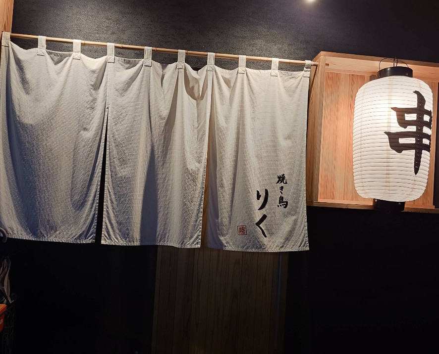
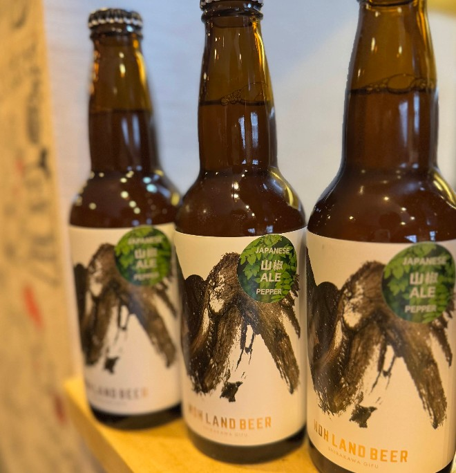
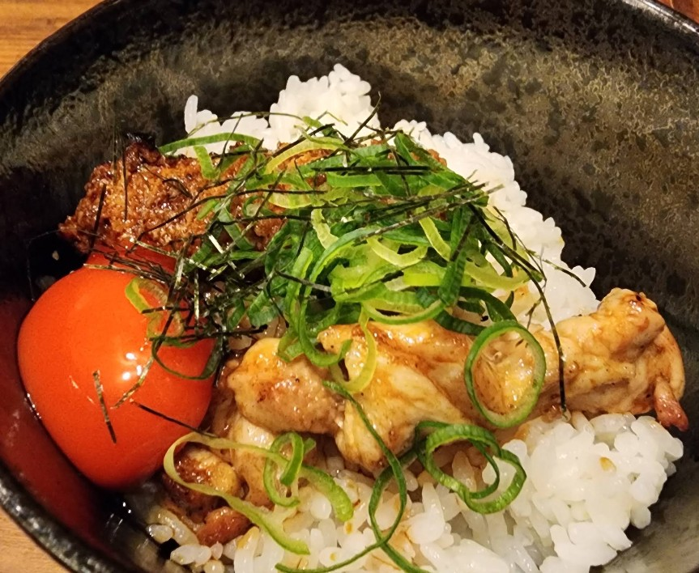

📸 最新情報はInstagramで発信しています
Instagramを見る岐阜県瑞穂市に店を構える「焼き鳥 りく」は、地域の方々に愛されるアットホームな居酒屋です。扉を開けると広がる香ばしい炭火の香りと、どこか懐かしくホッと落ち着く和の空間がお客様をお迎えいたします。
一本一本、その日の状態を見極めて丁寧に串打ちし、備長炭の強火で一気に焼き上げる焼き鳥は、外はパリッと香ばしく、噛めば肉汁が溢れるジューシーな仕上がり。多くのお客様から「何度でも食べたくなる」と嬉しいお言葉をいただいております。
ご家族での賑やかな団欒から、お仕事帰りの癒しの一杯、ご友人との楽しいひとときまで。価格もリーズナブルに抑え、誰もが気軽に立ち寄れるお店づくりを心掛けています。「りく」で心ゆくまでお寛ぎください。
遠赤外線効果の高い備長炭を使用。熟練の火入れ技術で、表面はパリッと香ばしく、中は肉汁を閉じ込めてふっくらと焼き上げます。
大将の温かい人柄と活気あふれる店内。お一人様でも居心地の良いカウンター席や、ご家族でくつろげるお座敷をご用意しております。
「美味しいものを、お腹いっぱい食べてほしい」。そんな想いから、高品質なお肉をリーズナブルな価格でご提供し続けています。



一つひとつの串が大きく、食べ応えが抜群です。特にレバーとつくねは絶品で、炭の香りが食欲をそそります。価格も良心的で、ついつい頼みすぎてしまうほど大満足でした。
子連れでも快く迎えてくださり、座敷席でゆっくりと食事を楽しむことができました。大将やスタッフさんの接客がとても温かく、また家族で伺いたいと思える素敵なお店です。
仕事帰りにふらっと立ち寄れるアットホームな雰囲気が気に入っています。焼き鳥の味はもちろん、お酒の品揃えも良く、カウンターで大将と話しながら飲む時間が最高の癒しです。